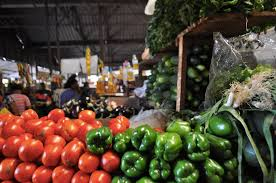
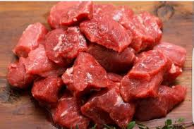
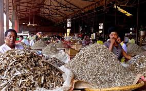
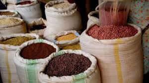
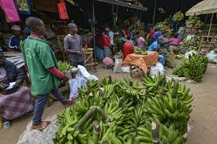
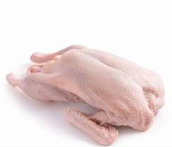

About Kimironko Market
Kimironko Market is Kigali's largest and most vibrant open-air market. It's the perfect place to experience local life, buy fresh fruits and vegetables, discover Rwandan spices, and taste traditional foods.
🛒 What You'll Find at Kimironko Market
- Fresh Fruits - Pineapples, mangoes, bananas, passion fruits, avocados
- Vegetables - Tomatoes, onions, carrots, cabbages, spinach, eggplants
- Spices & Herbs - Local spices, garlic, ginger, chili peppers
- Grains & Legumes - Beans, rice, maize, sorghum, millet
- Meat & Fish - Fresh beef, goat, chicken, tilapia
- Traditional Foods - Cassava flour, sorghum flour, dried fish
🌟 Shopping Tips
- Arrive early (8am-10am) for the freshest produce
- Bring cash - no credit cards accepted
- Bargain politely - vendors expect negotiation
- Hire a local guide if it's your first time
- Try fresh juice from one of the market stalls







